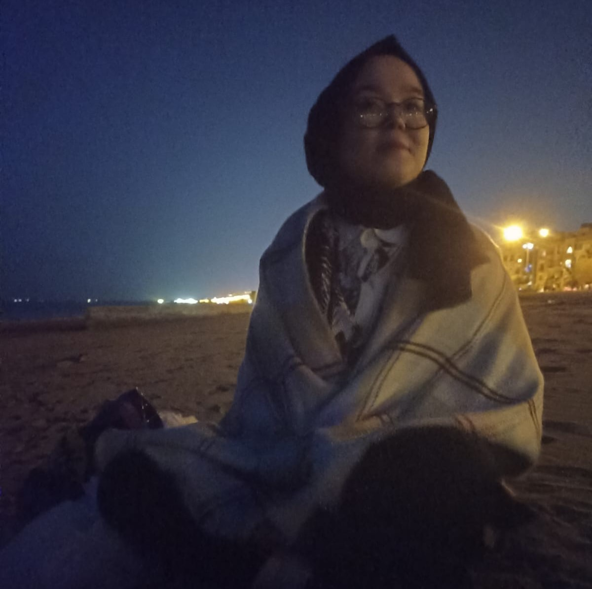

HAKKIMIZDA
Türk Roket Topluluğu, kuruluşu 2017’ye dayanan ve Türkiye’de roket bilimini genç, yaşlı; eğitimli, eğitimsiz ayrımı yapmadan anlatmaya çalışan bir topluluktur.
MİSYON
Türk Roket Topluluğu, toplumun tüm kesimine hitap ederek roket bilimine olan ilgiyi arttırmaya çalışmaktadır. Bu çerçevede saha üzerinde katma değeri yüksek projeler geliştirmeyi ve farklı platformlarda etkinlikler düzenlemeyi sürdürmektedir.
VİZYON
Türk Roket Topluluğu, roket/uzay biliminin toplumdaki her kesimin anlayabileceği bir bakış açısıyla anlatılabileceği düşüncesinden yola çıkılarak oluşturulmuştur.
SPONSORLARIMIZ
İŞ BİRLİKÇİLERİMİZ
MADDİ DESTEKÇİLERİMİZ
Burak E.
Sedat P.
Aslı Gülbike U.
Fahri K.
Uğur K.
Uğurcan Ö.
Bilgin E.
Hakan S.
GÖNÜLLÜLERİMİZ
Amacımız ve vizyonumuz doğrultusunda bizimle proje/etkinlik yapan gönüllülerimizin listesi:

Berkay Eren Emin
Mühendisliğe ve teknolojiye olan ilgisi 10 yaşından itibaren başladı. 8 sene boyunca BİLSEM'de resim öğrencisi olarak eğitim aldı. İlk web sitesini 2015 yılında ve henüz 12 yaşındayken kurdu.

Hasan Hüseyin Öztürk
Isparta'da doğdu ve Isparta'da büyüdü. Çocukluk hayali Makine Mühendisliği idi. Şuan Mekatronik Mühendisliği son sınıf öğrencisi. Gömülü yazılım ve elektronik devre tasarımları üzerinde çalışıyor.

Ahmet Kurnalı
Bilim ve teknolojiye olan ilgisi 12 yaşında başladı ve hâlâ devam etmekte. Ortaokulda Teknofest'in düzenlediği yarışmalara katıldı. Lisede okulu için kütüphane takip programı yazdı.

Feyza Betül Gelici
Lise yıllarında mühendislik ve astronomi alanlarına ilgi duydu. Bu ilgisi onun Havacılık ve Uzay Mühendisliği seçmesinde en önemli faktör oldu. Üniversitede ilgisi roketler üzerine yoğunlaştı.
Mustafa Çatalbaş
Kayseri'de doğdu. 14 yaşında havacılık ve uzay konularına merak saldı. Lisede bu doğrultuda Cezeri Havacılık ve Uzay ekibini kurdu. İnegol Teknoloji Festivali'nde roket alanında dördüncülük elde etti.

Dilşer Göçmen
Astrofizik ve Uzay taşıtlarına çocukluğundan beri hep ilgi duydu. Teknofest Liselerarası İnsansız Hava Araçları ve Roket Yarışmaları'na 3 senedir aktif bir şekilde katılım sağlamaktadır.
Cansu Baytürk
Uzay ve fiziğe olan tutkusunun hayatta kendisini her daim yüksek motiveli tuttuğuna inanmaktadır. Roketler ve enerji üzerine çalışmaları lise yıllarında başlamıştır.

Muhammed Siraç Zor
Toplamda 4 yıl olmak üzere Tae-Kwon-Do ile uğraştı ve siyah kuşaktır. Aralıklı olarak kickbox ile uğraşmaktadır. Şuan Uçak ve Uzay Mühendisliği Bölümü 4. sınıf öğrencisi.

Hayri Siviş
Uzaya olan ilgisi ilkokulda başladı. Bu alanda her zaman projeler geliştirmeye çalıştı. Tıp Fakültesi'ni hedeflemişti ancak lisede bu düşüncesi tamamen değişti. Fiziği benimsemeye başladı.

Sıla Öztürk
Uzayla ilgilenmekte. Türk Roket Topluluğu'na kendini geliştirmek ve başarılı projeler üretmek için katıldı. Şuan Havacılık ve Uzay Mühendisliği bölümü hazırlık öğrencisi.
Yusuf Erdem
Havacılık ve Uzay Sanayii alanı ilgisini çektiği için Türk Roket Topluluğu'na katılmaya karar verdi. Kendini Solidworks gibi tasarım uygulamarında geliştiriyor. Şuan Makine Mühendisliği öğrencisi.

Eda Vural
Lise yıllarında programlamaya ve teknolojiye duyduğu ilgi sonucu Yazılım Mühendisliği bölümünü seçti. Şu anda birinci sınıf öğrencisi.

Benginur Aydemir
Bursa'da doğdu. Küçüklüğünden beri gökyüzüne hayran duydu. Bu hayranlığı üniversitede Havacılık ve Uzay Mühendisliği seçmesinde etkili oldu.

Duygu Boztepe
Programlama ve tasarım ile ilgilemekte. Lisanlı oriyantiring sporcusu. Hobi olarak tiyatro yapıyor ve piyano çalıyor. Şuan Hukuk Fakültesi, Uluslararası Ticaret ve Lojistik bölümleri öğrencisi.
Cihan Kalbur
Havacilik ve Uzay alanlarına ilgisi 12 yaşında başladı. Bu ilgisi, Havacılık ve Uzay Mühendisliği bölümünü seçmesinde en önemli etkenlerden biri oldu. Şuan Havacılık Uzay Mühendisliği öğrencisi.